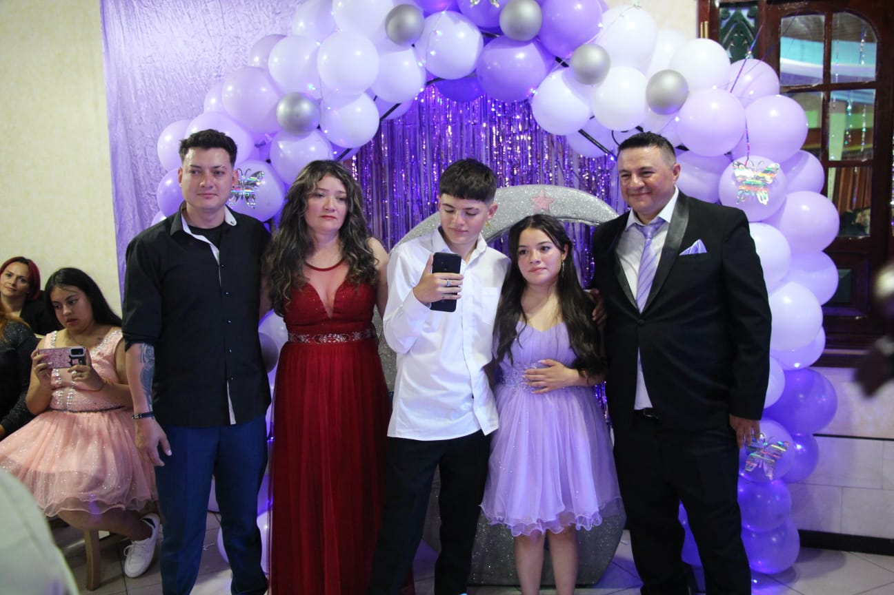

Le dedico este proyecto a mis padres, mi hermana que es la que ha
estado conmigo en este proceso a mis amigos por ser la guía de mi vida,
por ser mi motivo para seguir adelante, porque son los que me han hecho una
persona responsable, inculcando valores, principios y por los consejos
que me dieron para que jamás me rindiera.
